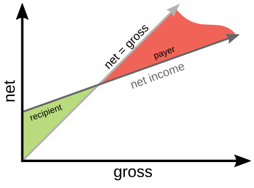

5. Economy
5.1 Universal Basic Income
Many readers have probably already heard of the first idea we want to explore. That's good—It means we can start our journey on familiar ground! It's about the universal basic income. This idea has been seriously advocated since around 1920 and is still actively discussed today.[24]
Especially the long list of planned but then canceled or weakened pilot projects and field studies shows very well how difficult it is to introduce a fundamentally new idea if society as a whole is not convinced of it.
As previously stated, we will only address how to convince enough people to implement one of the ideas presented in this book in its final chapter. Until then, we can just assume people are already convinced of the idea and look at its consequences!
But first, let's clarify what a universal basic income (UBI*) is and how it's supposed to work. A UBI is paid to all citizens of the state, without checks of any kind. In return, all state support that can be covered by the UBI will be abolished. In the most common model, it is funded by the income tax. That tax would no longer be progressive as it is now (with the tax rate increasing with higher income), but rather a high, but constant, percentage paid on every bit of income. Offsetting this tax percentage with the UBI can result in a "negative income tax." In other words: The state transfers money to citizens with a low income.
Calculation of net income with UBI: All social security contributions that are intended to protect against loss of income are superfluous with UBI. So, apart from health and long-term care insurance, salary minus income tax plus UBI is what ends up in the citizen's account (net income).
We assume a basic income of €800 for the calculation, as well as a constant income tax rate of 40%.
Formula: Gross income × 0.6 (deducts the 40% income tax) + 800€ (amount of the UBI) ⇒ Net income
0€ × 0,6 + 800€ ⇒ 800€
1 000€ × 0,6 + 800€ ⇒ 1 400€
2 000€ × 0,6 + 800€ ⇒ 2 000€ (Break-even: Income tax = UBI)
3 000€ × 0,6 + 800€ ⇒ 2 600€
6 000€ × 0,6 + 800€ ⇒ 4 400€
One can play with the percentage of income tax and the amount of the UBI to change the ratio of gross to net. The higher the UBI, the higher the income tax rate must be to ensure funding.

Given that most criticism of a UBI centers on the question of whether people would still be motivated to work despite receiving this additional income, I will assume a low UBI of €800 in what follows. Enough to buy food, have a roof over one’s head—even if it’s just a single room—and some clothing. In other words: if you live alone, it is enough to get by, but not enough for full participation in society. Nobody has to support a family on one UBI—the partner and each child receive their own money. And when several people live together, costs such as rent per person, as well as food, can be covered more affordably.
Since there is no means test (or any other kind of test) with UBI, it doesn't have to be the only source of income. On the contrary, every little extra bit of income helps. Nobody minds if you still have money that is well invested and contributes some return on capital, or if you are supported by family members. Or if you find ways to reduce your expenses.
So on the one hand, a large, expensive, and often unfair control bureaucracy is eliminated. Yet on the other hand, the motivation to become active and improve one's own financial situation is greater than any penalties from the employment office could ever achieve.
If the whole scheme works well, enough people still work, and the public finances are sound, one can carefully adjust the whole thing in a more humane direction: raise the UBI and the income tax rate a bit, then wait and see if everything continues to work well. This way, we might even end up with a UBI high enough for social participation, instead of just survival.
Even with increasing automation through AI and robots, and a widening income gap between those who have well-paid jobs and everyone else (when the median* income decreases even though the average income increases), this system can cope very well. Funded by the high incomes of the wealthy few and from corporate profits, it then opens up the possibility for everyone else to seek employment that fulfills them, even if that pays very little or not at all.
In short: The system is simple, flexible, and robust. And like any self-regulating system, it will work far better in practice than a regulatory monster that one tries to correct with ever more rules.
A few more words about the UBI for children: I would pay out the UBI regardless of age. If this proves to be a bad idea because the UBI is much higher than current child benefits and thus creates too strong an incentive for families to have many children, the state can counteract this by adjusting the level of state funding for daycare centers and schools (meaning: children receive the full UBI, but parents have to spend part of it on daycare costs or as school fees, with attending daycare or school being compulsory). That's how you get the whole calculation clean without having to set age limits for the UBI.
We will take a closer look at the UBI's financing in an implementation example: Chapter 13.3, "UBI, cultural points, and the education system".
Review of Requirements
In chapter 4.2, “Requirements for Futurities”, I have developed an overview of the requirements futurities in this book must meet.
Therefore, I want to conclude the presentation of each futurity with a table in which I compare it to these requirements. As a plausibility check, whether we have actually considered the futurities from all relevant angles.
This is the first of these tables, the review of requirements for the futurity "Unconditional Basic Income":
|
Requirement |
Features of this Futurity |
|
low demands on people’s character |
|
|
no world government |
|
|
costs considered |
• replaces existing social benefits • closer examination in Chapter 13.3 |
|
automatic adaptation to a changing world |
• more flexible than current social systems • can handle it well if we as a society run out of work |
|
help citizens keep up with change |
• easier to understand than current social systems • unconditional support |
|
promote technological development |
• Citizens are more willing to take risks |
|
resilience to withstand adversity |
• More active citizens can better cope with adversity |